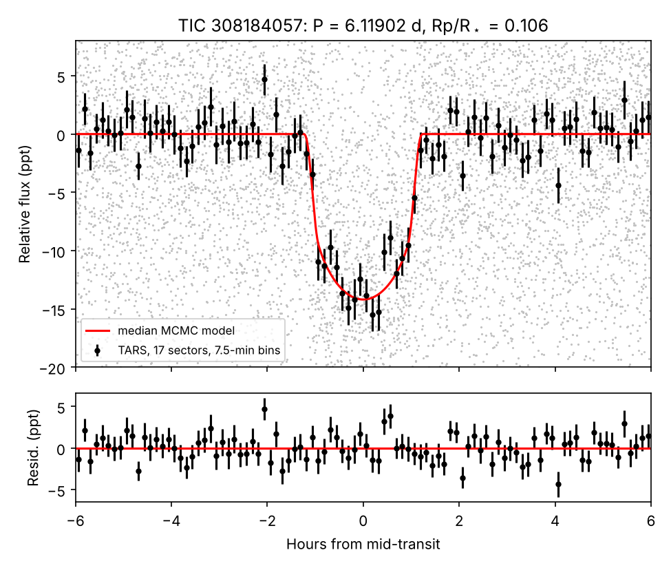
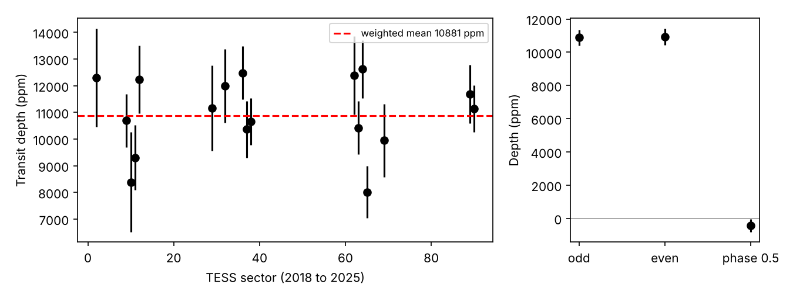
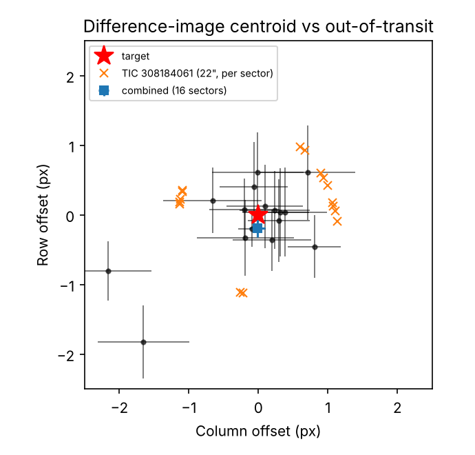

Version 1 — 2026-11-06 — not peer reviewed — DOI: 10.5281/zenodo.24005247
We report a periodic transit-like signal on TIC 308184057, a K dwarf with T = 14.50, Teff ≈ 4340 K, R★ ≈ 0.73 R☉, at 424 pc. The signal was found in a blind search of 8,783 dwarfs with T = 13.5–15.5 in TGLC full-frame-image (FFI) light curves. These stars are fainter than the T = 13.5 limit of the Quick-Look Pipeline (QLP).
We confirmed the signal in independent TARS FFI photometry covering 17 TESS sectors between 2018 and 2025:
The transit-derived stellar density, 4.6 (+0.7/−1.0) g cm⁻³, is ≈ 2σ above the TIC value of 2.5 g cm⁻³. This may point to orbital eccentricity, an overestimated stellar radius, or a blend.
We do not claim a planet. We report the signal as a planet candidate and provide an ephemeris for ground-based photometry, high-resolution imaging and radial-velocity follow-up. A ~0.8 R_J companion to a 0.68 M☉ star would produce K ≈ 100–130 m s⁻¹ if its mass is near 1 M_J.
The TESS Quick-Look Pipeline searches FFI light curves to T = 13.5, and most community searches use QLP or SPOC products. Stars fainter than that limit, and without 2-min data, have received far less attention. Giant planets still produce detectable ~1% transits around such stars.
Recent PSF-based FFI photometry makes these stars searchable with modest computing resources. Examples are TESS-Gaia Light Curves (TGLC) and the TARS high-level science product. We ran such a search, as part of an independent project using public data only, and report its strongest surviving signal.
The search sample is 8,783 southern (ecliptic latitude < −15°) dwarfs with Teff = 3800–6200 K, R★ = 0.4–1.3 R☉ and T = 13.5–15.5. Stars that are already TOI, CTOI, KOI or confirmed-planet hosts, or are catalogued eclipsing binaries, were excluded before the search.
Pipeline (tglc_search.py):
Frozen candidate thresholds, set before the search was run: SNR ≥ 10, SDE ≥ 9, ≥ 2 transits, depth 0.3–5%, odd/even < 3σ, secondary < 3σ, and a duration consistent with the stellar density.
Completeness and false alarms. In injection–recovery tests on 114 real light curves, the pipeline recovered 22% of injected 0.5–1.5% giants with P = 1–8 d. The false-alarm rate on uninjected light curves was 0.9%.
Results. 42 stars passed. A second, frozen filter
(tglc_vet.py) requires a flat out-of-transit fold at P and
at 2P, and directly measured odd/even depths that agree. Thirty-seven of
the 42 failed it; most were contact binaries, pulsators and short-period
EBs.
TIC 308184057 survived with P = 6.119 d, SNR 17 and SDE 16. It is the only survivor that is consistent across 17 sectors of independent photometry.
| Test | Result |
|---|---|
| Multi-year consistency (TARS, 17 sectors, 2018–2025) | transit present in every sector; weighted mean depth 10,880 ppm; scatter consistent with the errors (Fig. 2) |
| Odd/even depth | 10,879 ± 471 vs 10,935 ± 495 ppm (0.1σ) |
| Secondary eclipse at phase 0.5 | −429 ± 385 ppm (none) |
| Out-of-transit flatness at P and 2P (TGLC) | χ²/dof = 0.68 and 0.57 (no ellipsoidal or reflection signal) |
| Difference-image centroid (TESScut, 16 sectors) | offset (−0.02 ± 0.11, −0.20 ± 0.12) px from the target, 1.6σ (Fig. 3) |
| Nearest capable neighbour (TIC 308184061, G = 16.4, 22″) | would need a ~4.6% eclipse; disfavoured by Δχ² = 76 relative to the target |
| Gaia DR3 (target) | RUWE 0.953, ipd_frac_multi_peak 0, non_single_star 0; no source within 19.9″ |
| Catalogue and duplicate checks | none in the TOI, CTOI, NASA planet (60″ cone), TESS EB or public amateur lists; ExoFOP: 0 TOIs, 0 CTOIs, no follow-up |
We fit all 17 sectors jointly with batman and emcee (40 walkers, 6,000 steps, 2,000 discarded as burn-in).
| Parameter | Value |
|---|---|
| T0 (BTJD = BJD − 2457000) | 3051.21884 ± 0.00080 |
| P (d) | 6.1190153 ± 0.0000064 |
| Rp/R★ | 0.1064 (+0.0031/−0.0033) |
| b | 0.24 (+0.20/−0.17) |
| ρ★ (g cm⁻³), transit-derived | 4.6 (+0.7/−1.0) (TIC: 2.5) |
| a/R★ | 21.0 (+0.9/−1.6) |
| i (deg) | 89.3 (+0.5/−0.6) |
| T14 (h) | 2.40 (+0.08/−0.06) |
| Rp (R_J), for R★ = 0.73 ± 0.05 R☉ | 0.76 ± 0.06 |
Absolute depths differ slightly between photometry pipelines (TGLC ≈ 1.6%, TARS ≈ 1.1–1.25%). This most likely reflects differences in background and dilution treatment.
We ran TRICERATOPS v1.1.0 on the TARS 200-s data (Sectors 62–65, 69, 89, 90) with 3×3-pixel apertures and 10⁶ draws.
Adaptations for our network-restricted environment (the method is unchanged):
| Sectors | FPP | NFPP |
|---|---|---|
| 62–65, 69, 89, 90 (all) | 0.19 | 0.17 |
| 62–65 | 0.36 | 0.32 |
| 69, 89, 90 | 0.55 | 0.51 |
Interpretation.
Nature of the companion. A radius of ≈ 0.76 R_J is consistent with a sub-Saturn or Saturn-mass planet, but also with a brown dwarf or a very low-mass star. Only a radial-velocity mass can separate these. The absence of a secondary eclipse (< ~800 ppm at 2σ) and of phase-curve or ellipsoidal variation argues against a luminous stellar companion, though it does not rule one out.
Density tension. The transit-derived stellar density (4.6 g cm⁻³) is ≈ 2σ higher than the TIC estimate (2.5 g cm⁻³). There are three possible explanations:
Better stellar characterisation (spectroscopy) and RVs will resolve this.
Why it was not found before. The star is fainter than the QLP search limit, has no 2-min data, and lies in a crowded field near the southern continuous viewing zone.
Predicted mid-transit times (UTC) for the coming months, ±2.4 min
(1σ). Each transit is fully observable (target altitude > 30°, Sun
below −12°) from the site listed. The full table is in
TIC308184057_ephemeris_observability.csv.
| Mid-transit (UTC) | BTJD | Fully observable from |
|---|---|---|
| 2026-12-10 15:56 | 4385.1642 | Siding Spring |
| 2026-12-22 21:39 | 4397.4022 | SAAO |
| 2026-12-29 00:30 | 4403.5212 | SAAO |
| 2027-01-04 03:21 | 4409.6402 | CTIO / La Silla / Las Campanas |
| 2027-01-10 06:13 | 4415.7593 | CTIO / La Silla / Las Campanas |
| 2027-01-22 11:56 | 4427.9973 | Siding Spring |
| 2027-01-28 14:47 | 4434.1163 | Siding Spring |
| 2027-02-09 20:30 | 4446.3543 | SAAO |
Requested follow-up:
The search, vetting and fitting code, the frozen thresholds with their SHA-256 hashes, the light-curve products and all result tables are public at https://github.com/garvitkaushik-123/exoplanet-search. (Note: the repository name ends with a dot.) The archived snapshot of this note, its data products and code is on Zenodo: https://doi.org/10.5281/zenodo.24005247.
The analysis code was written and run with the assistance of an AI coding agent (Claude Code, Anthropic), under the author’s direction. All thresholds were fixed before the corresponding searches were run. Each reported number comes from a script in the repository, and the author reviewed every candidate and plot.
This work uses data from the TESS mission, obtained from the Mikulski Archive for Space Telescopes (MAST) at the Space Telescope Science Institute. Funding for the TESS mission is provided by the NASA Science Mission Directorate. We use the TGLC and TARS high-level science products, the TESS Input Catalog, ESA Gaia DR3 data, the NASA Exoplanet Archive (operated by Caltech under contract with NASA), and ExoFOP. We used astropy, astroquery, lightkurve, wotan, batman, emcee and TRICERATOPS.


